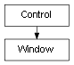

class cymel.ui.window.Window¶

- class cymel.ui.window.Window(*args, **kwargs)¶
ベースクラス:
Controlmel UI の window ラッパークラス。
withで setParent が行える。Methods:
changeToDockControl([allowedArea, area])ウィンドウをドッキングコントロール化する。
children()ウィンドウが持つ子コントロールを全て得る。
delete()ウィンドウを削除する。
layout()ウィンドウが持つレイアウトを1つ得る。
layouts()ウィンドウが持つレイアウトを全て得る。
これをカレントペアレントにする。
name()ウィンドウ名を得る。
parent()親は得られない。
show()ウィンドウを表示する。
window()このウィンドウそのものを得る。
Methods Details:
- UICMD()¶
- changeToDockControl(allowedArea=('left', 'right'), area=None, **kwargs)¶
ウィンドウをドッキングコントロール化する。
- 戻り値の型:
- delete()¶
ウィンドウを削除する。
- makeCurrent()¶
これをカレントペアレントにする。
- parent()¶
親は得られない。
- 戻り値の型:
None
- show()¶
ウィンドウを表示する。